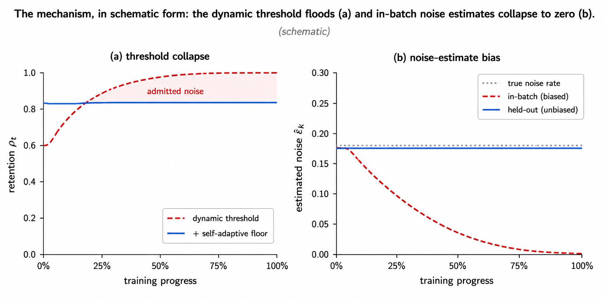
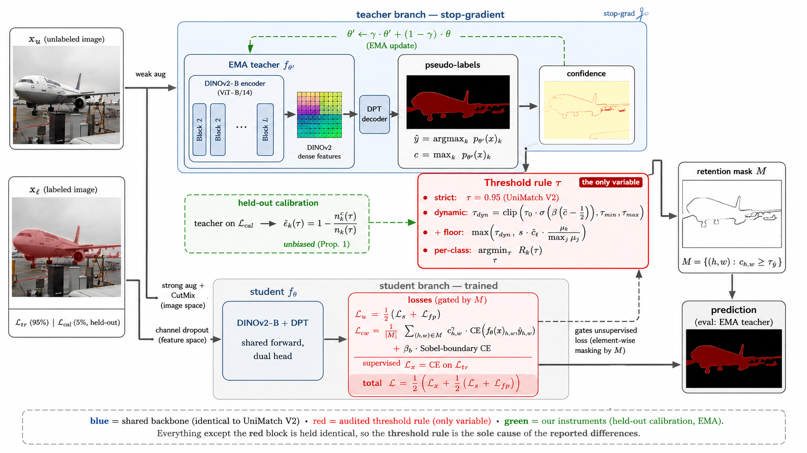
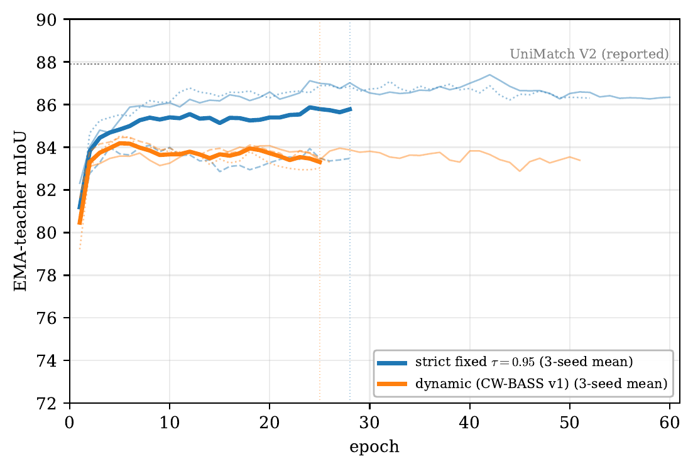
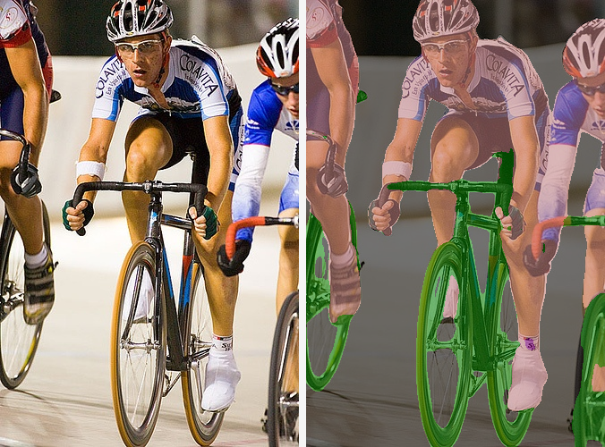
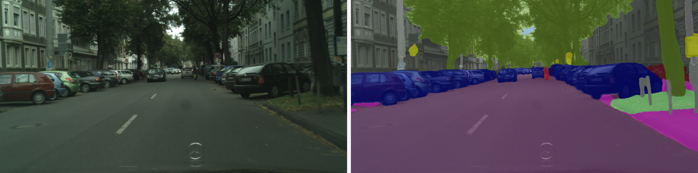
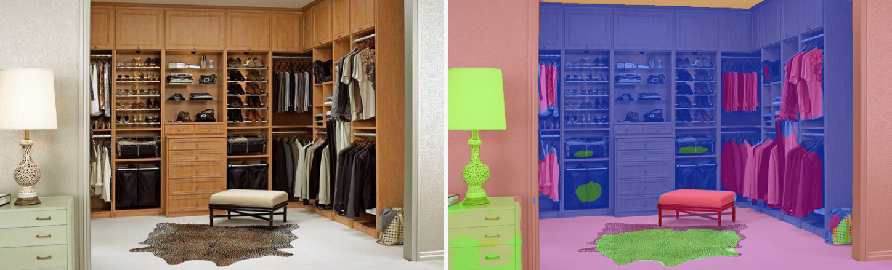

CW-BASS v2

The one question
Semi-supervised segmentation turns on one question: which pseudo-labels to trust, and how much. A generation of selection rules — dynamic thresholds, per-class curricula, soft confidence weights — answered it for the noisy, under-confident ResNet teachers of the day. Self-supervised foundation encoders (DINOv2) change the regime: the teacher is now strong and its confidence saturates, so filtering that helped a weak teacher can hurt a strong one.
Method
A single DINOv2-Base backbone drives an image-strong and a feature-perturbation stream (UniMatch V2 style) into a DPT-lite decoder. On top, CW-BASS v2 adds three components and one decision:
- Confidence-weighted, boundary-aware self-training — the CW-BASS objective (Sobel boundary auxiliary).
- Held-out calibration slice — 5% of the labeled set, withheld from the supervised gradient, gives an unbiased estimate of pseudo-label noise (in-batch estimates are optimistically biased).
- Self-adaptive confidence floor — with a bounded-retention property, so the dynamic threshold cannot drift to its clamp and admit everything.
- The reliability gate — one forward pass on the held-out slice decides strict vs. floor.

Results
Accuracy tracks the backbone, and CW-BASS v2 sits in the top DINOv2 tier. On the saturated Pascal and Cityscapes teachers the gate selects strict (reproducing the UniMatch V2 operating point); on the confidently-unreliable ADE20K teacher it selects the floor and pulls ahead.
| Method | Backbone | 1/16 (92) | 1/8 (183) | 1/4 (366) |
|---|---|---|---|---|
| UniMatch V2 | DINOv2-B | 86.3 | 87.9 | 88.9 |
| CW-BASS v2 (gate → strict) | DINOv2-B | 84.47 | 87.40 | 88.59 |
| SemiVL | CLIP ViT-B | 84.0 | 85.6 | 86.0 |
| UniMatch V2 | DINOv2-S | 79.0 | 85.5 | 85.9 |
| PrevMatch / BeyondPixels | ResNet-101 | 77.3 | 78.6 | 79.8 |
1/8 three-seed mean 86.19 ± 1.82 (per-seed 87.40 / 84.09 / 87.08); 1/16 & 1/4 single seed. Released weights: EMA teacher of seed 0.
| Method | Backbone | 1/16 | 1/8 | 1/4 |
|---|---|---|---|---|
| UniMatch V2 | DINOv2-B | 83.6 | 84.3 | 84.5 |
| CW-BASS v2 (gate → strict) | DINOv2-B | 83.16 | 83.96 | 83.99 |
| SemiVL | CLIP ViT-B | 77.9 | 79.4 | 80.3 |
| BeyondPixels | ResNet-101 | 78.5 | 79.2 | 80.9 |
Near-saturated teacher: the adaptive rules tie strict (spread ≈ 0.5 mIoU), so the gate's strict choice is a no-regret default. Single seed, best EMA.
| Method | Backbone | 1/8 (2,526) |
|---|---|---|
| CW-BASS v2 (gate → floor) | DINOv2-B | 50.58 |
| UniMatch V2 (reported) | DINOv2-B | 49.8 |
| Strict τ=0.95 (our repro) | DINOv2-B | 49.10 |
| SemiVL | CLIP ViT-B | 39.4 |
The one dataset here where selection changes the answer: the floor beats the strict baseline by +1.5 and edges above UniMatch V2-B's reported 49.8. Single seed.

The gate, measured blind
On a held-out slice we measure, per teacher, saturation S = Pr[c ≥ 0.95] and reliability πkept = Pr[correct | c ≥ 0.95] — a forward-only diagnostic that touches no mIoU. All six DINOv2 teachers are saturated, but they differ in reliability: on Pascal the confident set is trustworthy (πkept ≈ 98%), so strict filtering is right; on ADE20K it is confidently unreliable (πkept ≈ 89%, well below the 95% strict assumes), so the floor recovers accuracy a strict cutoff throws away. The gate reads this single statistic and selects the accuracy-optimal rule on all six teachers — with no access to validation mIoU.
Qualitative results
Left: input. Right: CW-BASS v2 prediction overlay (DINOv2-Base, 1/8 split). Validation images, the rule the gate selects on each dataset.



Pretrained models & demo
Each released checkpoint is the EMA teacher of the rule the gate selects on that dataset. The
live demo runs them on your own images — pick a label set, upload, get an overlay — and the
same app is in demo/ if you would rather run it yourself:
| Dataset | Rule selected | mIoU (1/8) | Weights |
|---|---|---|---|
| Pascal VOC (21) | strict | 87.40 | cwbass-v2-pascal |
| Cityscapes (19) | strict | 83.96 | cwbass-v2-cityscapes |
| ADE20K (150) | floor | 50.58 | cwbass-v2-ade20k |
BibTeX
@article{tarubinga2026cwbassv2,
title = {CW-BASS v2: Saturation-Aware Pseudo-Label Selection for
Semi-Supervised Segmentation under Foundation-Model Teachers},
author = {Tarubinga, Ebenezer},
year = {2026},
journal = {arXiv preprint arXiv:2608.12773},
eprint = {2608.12773},
archivePrefix = {arXiv},
primaryClass = {cs.CV}
}
v1: CW-BASS, Confidence-Weighted Boundary-Aware Learning for Semi-Supervised Semantic Segmentation, IJCNN 2025 (arXiv:2502.15152).